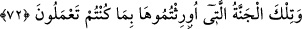
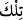
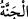

istiyorum”[194] duâsı nakledilmiştir.
Fakir (Bursevî) der ki: Bu âyette, fukahâdan şâyet kişi “ben cennette Allah’ı
göreceğim” dese kâfir olur. Şâyet “cennetten Allah’ı göreceğim” dese kâfir olmaz
diyenlere reddiye vardır. Bunun îzâhı şudur: “Ben cennette Allah’ı göreceğim” diyen
cenneti Allah’ı görmenin zarfı yapmış ve Allah’a mekân nispet etmiştir. Şâyet bu insan
cenneti, “cennette görülen Allah” yani “Allah cennettedir” diye inanırsa kâfir olur. Zîrâ
Allah’ı gören kulun cennette olması Allah’ın cennette olmasını gerektirmez. Nitekim
Peygamberimiz (s.a.) dünyada Allah’ı görmüştür. Halbuki Allah dünyada değildir. Bu
husus böyle bilinmeli, şüphe gönülden silinmelidir.
Bu konuda çok şeyler söylenebilir. Ancak Allah’ın görülmesi meselesi kayıt-kuyût,
yazma-çizme ehlinin değil, müşâhede ehlinin nasîbi olduğu için sözü bu şekilde
özetlemek îcâb etmiştir. Çünkü bu durum, öyle dedikoduyla falan bilinecek bir şey
değildir.
Bir mısra şöyledir:
Zâhid bu şarabın lezzetini bilmez.
“Siz orada ebedî kalacaksınız.” Burada gâib lafzından hitap lafzına geçiş yaparak
iltifat sanatının uygulanması, cennet ehlini şereflendirmek içindir. Yani onlar orada bâki,
dâimî ve ebedîdirler. Asla oradan çıkmayacaklar ve ölmeyeceklerdir. Çünkü hayat
devamlı olmasa elbette hayat âtıl olup sevinç, arzu ve lezzet noksan kalır. Nimetten
faydalanmak tam olmaz. Korku ve hasret de zâil olmaz. Dünya böyle değildir. Orada
hayat her an yokluğa mahkûm olduğundan gam ve kederle birlikte olup faydası zararla
karışıktır.
Eğer hayatta hasret, pişmanlık, zamana kahırlanmaktan başka bir netice elde ettiysen,
söyle!
72. İşte yaptıklarınıza karşılık size miras verilen cennet budur.
“İşte” dünyada “yaptıklarınıza” yaptığınız iyi işlere “karşılık size miras verilen
cennet budur.”
“__WORD__/tilke” kelimesi mübtedâ olup söz konusu cennete işârettir. “__WORD__/cennet” kelimesi
mübtedânın haberidir. “Bâ” harfi sebebiyedir. Bundan kasdedilen şudur: Cennete
girmek sırf Allah Teâlâ’nın lutuf, ihsan ve rahmetiyledir. Derecelerin taksimi ise
amellere göredir. Cennette ebedî kalmak ise, artık cennete giren kişinin hiçbir günahı
olmamasındandır. Bu âyette amelin karşılığı mîrasa benzetilmiştir. Çünkü amel eden
kişi, bu amelin karşılığında verilecek sevap ve mükâfâta halef olmaktadır. Yani amel
gider, onun karşılığı amel edenle beraber kalır. Sonuçta amel “mûris”/miras bırakan,